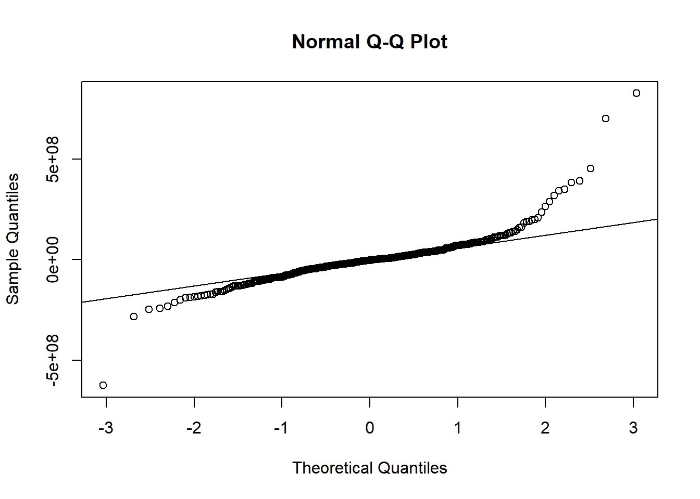

regresionmult=read.table("regresionmult.csv",header = TRUE, sep = ";")
#pairs(regresionmult)
pairs.panels(regresionmult, pch=21,main="Gráfico 01.6: Matriz de Dispersión, Histograma y Correlación")plot_ly(data = regresionmult, x = ~area, y = ~valor, color = ~as.character(estrato))## No trace type specified:
## Based on info supplied, a 'scatter' trace seems appropriate.
## Read more about this trace type -> https://plot.ly/r/reference/#scatter## No scatter mode specifed:
## Setting the mode to markers
## Read more about this attribute -> https://plot.ly/r/reference/#scatter-modeplot_ly(data = regresionmult, x = ~area, y = ~valor, color = ~as.character(bano))## No trace type specified:
## Based on info supplied, a 'scatter' trace seems appropriate.
## Read more about this trace type -> https://plot.ly/r/reference/#scatter
## No scatter mode specifed:
## Setting the mode to markers
## Read more about this attribute -> https://plot.ly/r/reference/#scatter-moderegmult=lm(valor~area+estrato+bano,data=regresionmult)
regmult=lm(valor~area+as.character(estrato)+as.character(bano),data=regresionmult)
summary(regmult)##
## Call:
## lm(formula = valor ~ area + as.character(estrato) + as.character(bano),
## data = regresionmult)
##
## Residuals:
## Min 1Q Median 3Q Max
## -623485644 -46743126 -2742241 38378645 825692778
##
## Coefficients:
## Estimate Std. Error t value Pr(>|t|)
## (Intercept) -111531079 80689403 -1.382 0.16766
## area 1270539 140131 9.067 < 2e-16 ***
## as.character(estrato)2 123726868 88375349 1.400 0.16227
## as.character(estrato)3 135691015 80486464 1.686 0.09259 .
## as.character(estrato)4 175083936 80202482 2.183 0.02961 *
## as.character(estrato)5 233535676 80343460 2.907 0.00385 **
## as.character(estrato)6 319990022 80626547 3.969 8.54e-05 ***
## as.character(bano)2 23838088 21646137 1.101 0.27143
## as.character(bano)3 39303396 27234618 1.443 0.14975
## as.character(bano)4 160887597 31407755 5.123 4.67e-07 ***
## as.character(bano)5 208333751 39005080 5.341 1.54e-07 ***
## as.character(bano)6 409734413 67172761 6.100 2.48e-09 ***
## ---
## Signif. codes: 0 '***' 0.001 '**' 0.01 '*' 0.05 '.' 0.1 ' ' 1
##
## Residual standard error: 111400000 on 406 degrees of freedom
## Multiple R-squared: 0.7233, Adjusted R-squared: 0.7158
## F-statistic: 96.49 on 11 and 406 DF, p-value: < 2.2e-16###residuales
plot1 <- ggplot(data = regresionmult, aes(valor, regmult$residuals)) +
geom_point() + geom_smooth(color = "firebrick") + geom_hline(yintercept = 0) +
theme_bw()
plot2 <- ggplot(data = regresionmult, aes(as.character(estrato), regmult$residuals)) +
geom_point() + geom_smooth(color = "firebrick") + geom_hline(yintercept = 0) +
theme_bw()
plot3 <- ggplot(data = regresionmult, aes(as.character(bano), regmult$residuals)) +
geom_point() + geom_smooth(color = "firebrick") + geom_hline(yintercept = 0) +
theme_bw()
plot4 <- ggplot(data = regresionmult, aes(area, regmult$residuals)) +
geom_point() + geom_smooth(color = "firebrick") + geom_hline(yintercept = 0) +
theme_bw()
grid.arrange(plot1, plot2, plot3, plot4)## `geom_smooth()` using method = 'loess'## `geom_smooth()` using method = 'loess'
## `geom_smooth()` using method = 'loess'
## `geom_smooth()` using method = 'loess'qqnorm(regmult$residuals)
qqline(regmult$residuals)
shapiro.test(regmult$residuals)##
## Shapiro-Wilk normality test
##
## data: regmult$residuals
## W = 0.831, p-value < 2.2e-16##residuales vs valores ajustados
ggplot(data = regresionmult, aes(regmult$fitted.values, regmult$residuals)) +
geom_point() +
geom_smooth(color = "firebrick", se = FALSE) +
geom_hline(yintercept = 0) +
theme_bw()## `geom_smooth()` using method = 'loess'